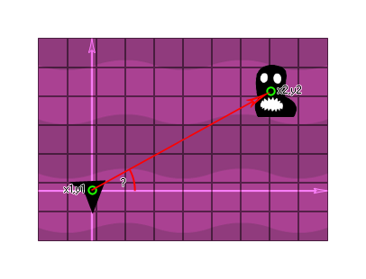

point_direction(x1, y1, x2, y2)
| Argument | Description |
|---|---|
| x1 | The x coordinate of the first component of the vector |
| y1 | The y coordinate of the first component of the vector |
| x2 | The x coordinate of the second component of the vector |
| y2 | The y coordinate of the second component of the vector |
Returns : Real
This function returns the direction of a vector formed by the specified components [x1,y1] and [x2,y2] in relation to the fixed x/y coordinates of the room. For example, in the image below if we want to
get the direction from the player ship position to the enemy position so that we can fire a missile at the enemy then we would use this function (the exact code is in the example below the image) :

var ex, ey;
ex = instance_nearest(x, y, enemy).x;
ey = instance_nearest(x, y, enemy).y;
with (instance_create(x, y, obj_Missile))
{
direction = point_direction(x, y, ex, ey);
}
The above code will get the x and y coordinates of the nearest enemy and then pass them to a bullet object to use in the point_direction function to set its direction of travel correctly.